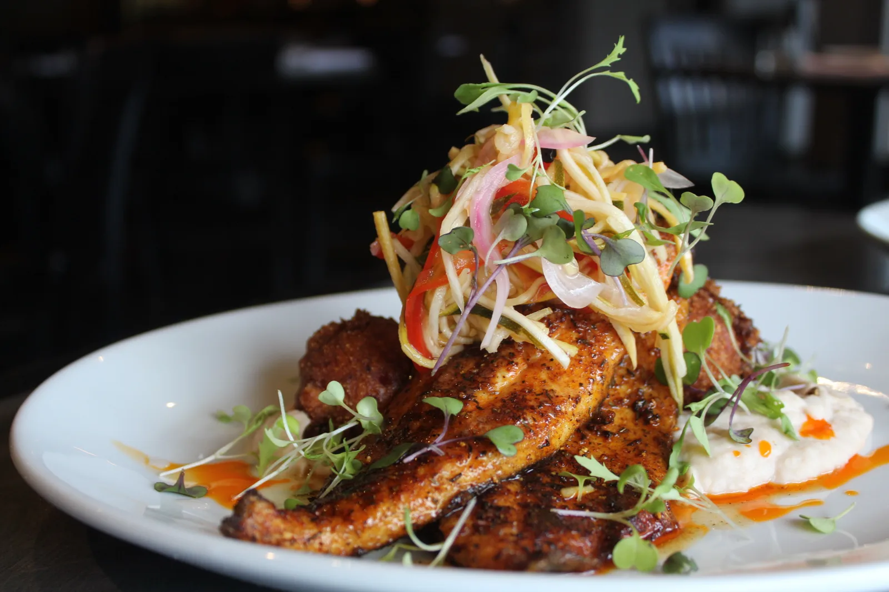
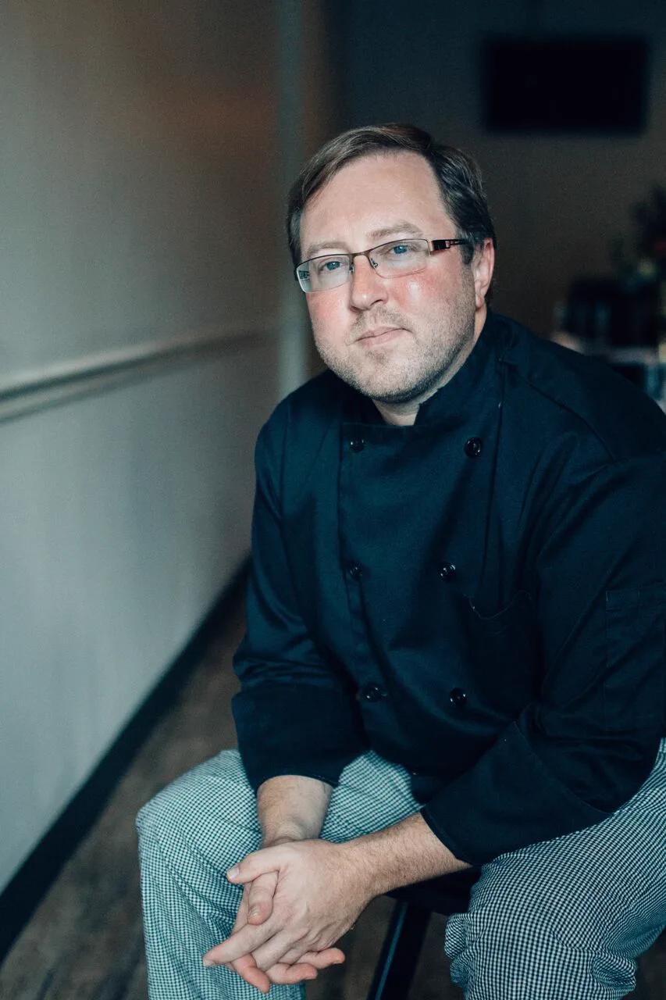
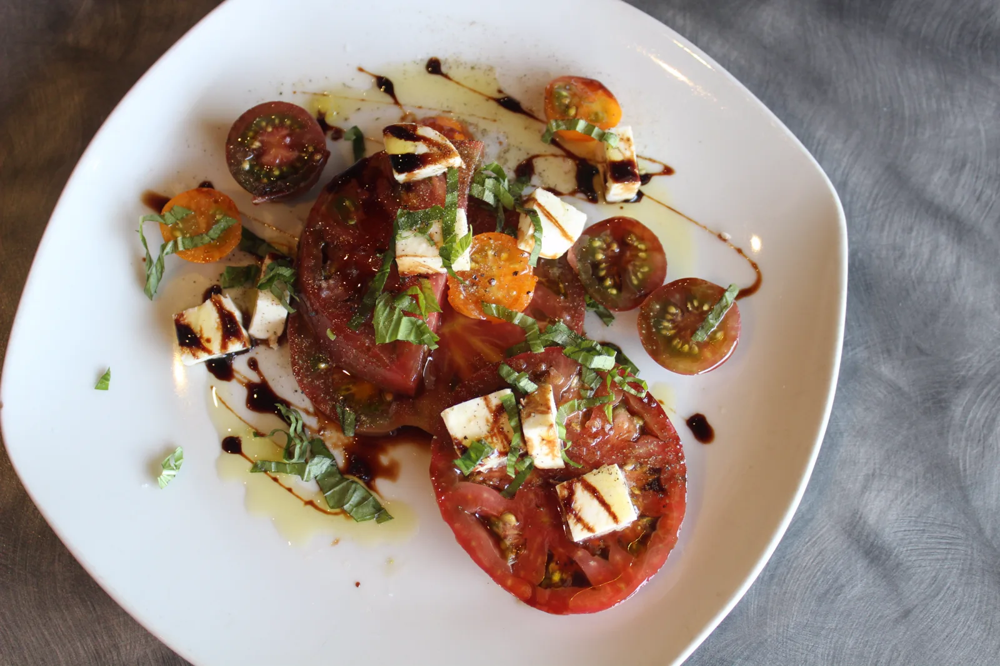
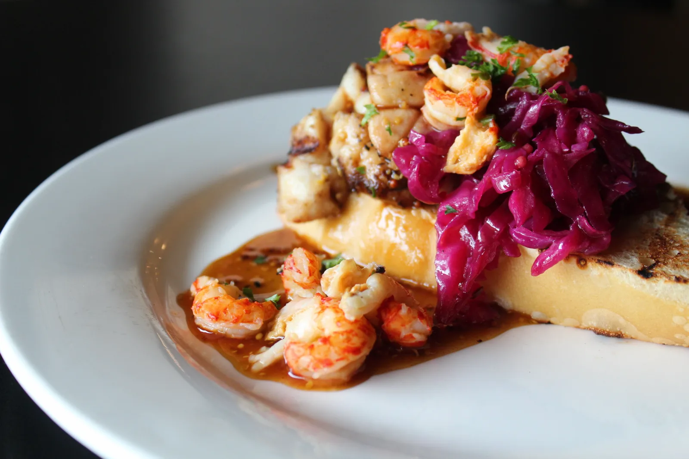
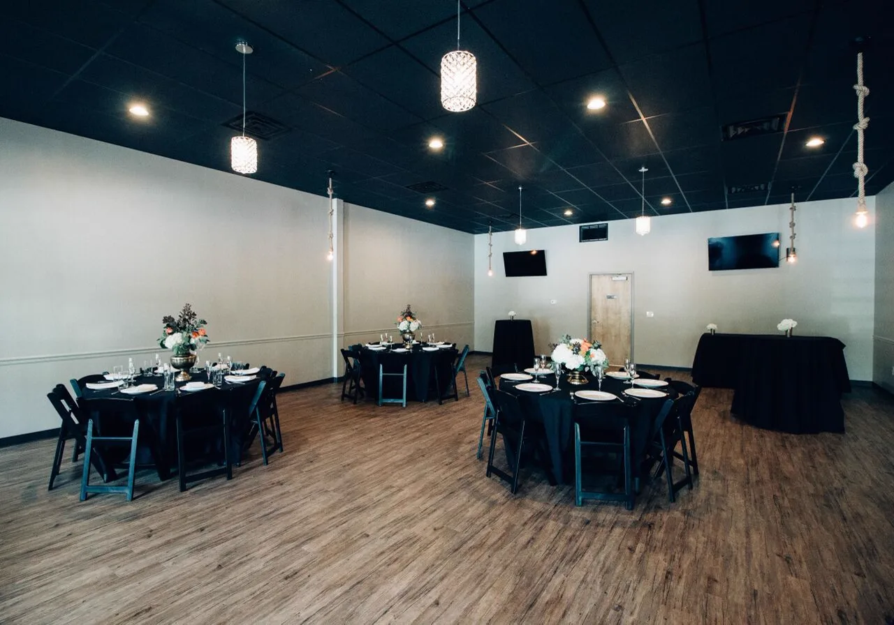
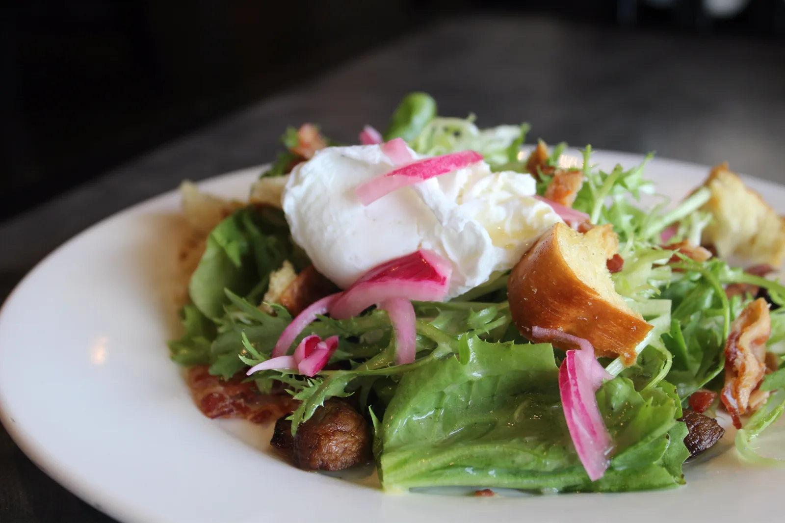
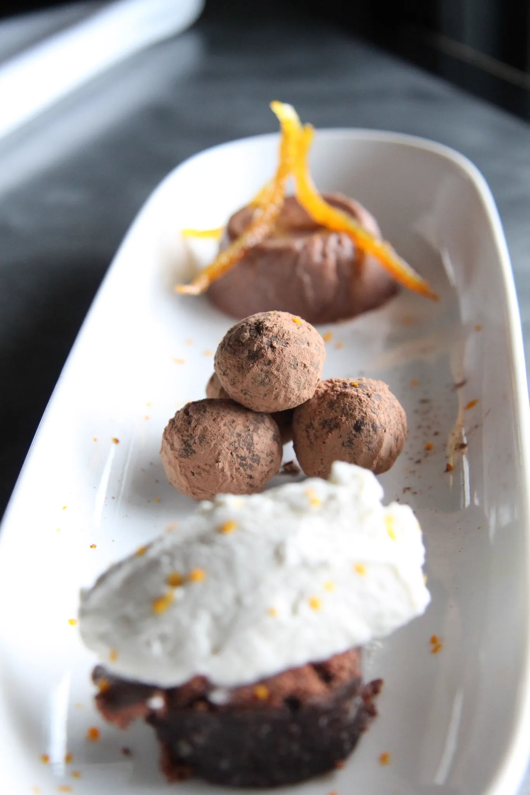
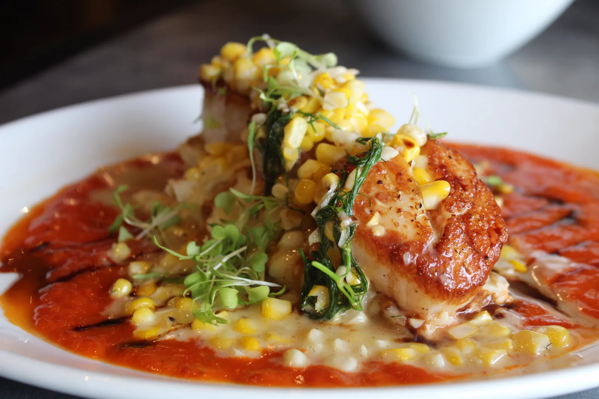

Catering
Hors d'oeuvres, full buffets and brunch — menus below. Requests go straight to the kitchen by email.

Seasonal Southern / New American · Murfreesboro, Tennessee
Chef Mitchell Murphree's seasonal menus — fresh seafood, local meats and produce, an open kitchen — in Georgetown Park since November 2004.
Our vision
Five Senses opened on November 18th, 2004, started by the brother-and-sister team of Mitchell and Mollie Murphree. Georgetown Park was chosen on purpose: diners had to find the restaurant and really want something different.
Mitchell Murphree — a graduate of the Culinary Institute of America in Hyde Park — became sole owner in January 2011 and is still the executive chef. The dinner, cocktail and wine menus change four times a year, with produce from local farmers like Haskell Evans, Brass Horn and Pinky's Micros.
Catering came in the spring of 2007: office lunches, wedding receptions, fundraisers, and ten years of feeding artists and VIP guests at Bonnaroo and Pilgrimage Festival.
“Five Senses has emerged as the destination for creative fine dining in the area.”
The Tennessean

Have a look






Photos shown are from the restaurant's own website — to be replaced with the owner's final selection.
Also at Five Senses Restaurant, Bar & Catering
Hors d'oeuvres, full buffets and brunch — menus below. Requests go straight to the kitchen by email.
A 32-seat private room and a 72-seat event hall in-house. Off-site, we've fed festival crews of thousands.
Physical gift cards — by email, by phone, or at the host stand.
Open kitchen, seasonal menu, a chef who trains.
Date Night Mondays, tasting menus, holiday dinners — by email first.
Find us
4.5 · 219 on Yelp
A note from the studio that built this page
Your Summer 2026 menu is a photograph, so Google can't read it and phones can't either; your events page still ends at Bonnaroo 2018. This page keeps your Tock reservations exactly where they are and puts the menu, private dining and catering in real text. One payment, and it's yours.
$50 starts the work. The other $450 is due only when you’ve seen the finished site and approve it — it goes live on your domain the same day.
If we can’t get there, the page comes down — and you’re out fifty dollars, not five hundred.
To say yes — or to change anything you see — just reply to the email that brought you here.
Same-day answer, in writing. This proposal stays up for 30 days, or comes down the moment you ask.
Wondering what happens after yes? The whole list is one page → (about ten phone photos and one email.)
Who we are: Veracod — see our work →